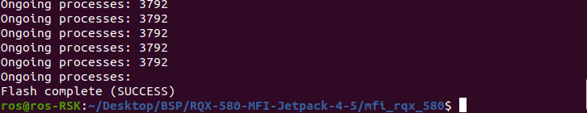

How to flash MFI¶
1. Parepare mfi image on your host computer.¶
Download mfi image.
{kind=link}
{kind=link}
Check ROScube is in recovery mode now.
lsusb | grep NVIDIA

Note
If successful, it will show APX.
2. Flash image to ROScube¶
Assuming image’s file name is RQX-580-MFI-Jetpack-4-5.zip. Un-archive this file first.
unzip RQX-580-MFI-Jetpack-4-5.zip
Then, use internal tool, nvmflash.sh to run the flashing procedure. Please make sure your Host PC has attached to ROScube-X.
Besure run ./nvmflash.sh as root permission.
cd RQX-580-MFI-Jetpack-4-5/mfi_rqx_580
sudo ./nvmflash.sh
Note
You may need to input your host PC’s root password when flashing the image.
Note
If there are any errors, you can view mfilogs folder for further information.
After 8 ~ 10 minutes, the flashing procedure will be complete.
{kind=link}
Massive Flashing
nvmflash.sh supports massive flashing, which means you can attach multiple ROScube and run nvmflash.sh to flash the image to multiple boards at the same time.
Warning
Please do not attach different models (e.g. RQX580 and RQX58G) to your host computer when using nvmflash.sh.